Арт-терапия — это направление психологической помощи, основанное на методах творчества и искусства. Обучение по арт-терапии позволяет освоить эффективные методы арт-терапевтической работы с индивидуальными клиентами, в групповой терапии, семейной терапии и на практике психолога. Мы составили рейтинг программ, где обучение проводится в дистанционном формате — это удобный формат обучения, который позволяет совмещать обучение с личной практикой. Курсы включают методики арт-терапии, песочную терапию, интермодальную терапию, технику арт-терапии. После прохождения курса и завершения обучения выдается диплом о профессиональной переподготовке.
Информация обновлена:
ТОП онлайн-курсы обучения по арт-терапии
- 🏆 Арт-терапия в психологическом консультировании – МИП (по промокоду onlinekursy скидка 🎁 10%)
- 🏆 Психолог-консультант. Арт-терапевт – НАДПО (по промокоду onlinekursy действует скидка 🎁 5%)
- 🏆 Арт-терапия в практике психолога – Онлайн институт Smart
- Арт-терапия в практической психологической помощи: курс обучения «Арт-терапевт» — АНО НИИДПО
- Психолог арт-терапевт + MBA — МИПО Психология (по промокоду onlinekursy 🎁 скидка 5%)
- Арт-терапия — МИТУ
- Практический психолог и арт-терапевт — ИППСС
- Арт-терапия — МШПП
- Арт-терапия в практической психологической помощи — МИПО (по промокоду onlinekursy действует скидка 🎁 10% )
- Арт-терапия в практике психолога – НЦРДО (по промокоду onlinekursy действует скидка 🎁 5%)
- Арт-терапия — ИПО
- Психолог-консультант. Арт-терапевт – ЦАППКК (по промокоду onlinekursy действует скидка 🎁 5%)
- Практическое использование методов арт-терапии — МИП (по промокоду onlinekursy скидка 🎁 10%)
- Арт-педагогика и арт-терапевтические технологии – ИППСС
- Арт-терапия: профессиональная переподготовка — учебный центр АПОК
- Профессия Арт-терапевт — МШП
- Арт-терапевт – Учебный центр «ЭКОДПО»
Бесплатные курсы по обучению арт-терапии
- Бесплатный онлайн-курс по арт-терапии – Stepik
- Бесплатные мероприятия по арт-терапии – Международная Школа Арт-терапии
- Вход для студентов «Ресурсная арт-терапия: искусство восстановления энергии и вдохновения» – Академия арт-терапии
Отличительные преимущества каждой дистанционной программы обучения по арт-терапии
| № | Название курса и школа | Отличительные преимущества | Ссылка |
|---|---|---|---|
| 🥇 | Арт-терапия в психологическом консультировании – МИП | Подходит для новичков; диплом + портфолио; кураторы, супервизии, песочная и семейная терапия | Перейти |
| 🥈 | Психолог-консультант. Арт-терапевт – НАДПО | Большой акцент на практику; доступ к реальным клиентам; диплом вносится в ФИС ФРДО | Перейти |
| 🥉 | Арт-терапия в практике психолога – Smart | Много практики; нейрографика, глина, ароматерапия; карьерные консультации | Перейти |
| 4 | Арт-терапия в практической психологической помощи – НИИДПО | Фокус на Expressive Arts Therapy; доступ к 1000+ вебинарам; бессрочный доступ к материалам | Перейти |
| 5 | Психолог арт-терапевт + MBA – МИПО Психология | 3 диплома, включая MBA; арт- и бизнес-коучинг; международное признание | Перейти |
| 6 | Арт-терапия – МИТУ | Фокус на выразительные техники и символизм; цена помесячно от 9 170 ₽ | Перейти |
| 7 | Практический психолог и арт-терапевт – ИППСС | 2 квалификации: психолог + арт-терапевт; обучение продвижению и практике | Перейти |
| 8 | Арт-терапия – МШПП | Группы до 5 человек; диплом MBA; бонусные модули по онлайн-практике | Перейти |
| 9 | Арт-терапия в практической помощи – МИПО | Фокус на кризисах и эмоциональной работе; трудоустройство + центр карьеры | Перейти |
| 10 | Арт-терапия в практике психолога – НЦРДО | Цена от 41 900 ₽; аудиолекции, мандалотерапия и кинотерапия | Перейти |
| 11 | Арт-терапия – ИПО | Видеоуроки, супервизии, доступ к Юрайт; налоговый вычет | Перейти |
| 12 | Психолог-консультант. Арт-терапевт – ЦАППКК | Цена 57 600 ₽; 1800 часов; доступ к платформе даже без интернета | Перейти |
| 13 | Практическое использование методов арт-терапии – МИП | Краткий курс (1 месяц); EMDR и арт-коучинг; цена 25 446 ₽ | Перейти |
| 14 | Арт-педагогика и арт-терапевтические технологии – ИППСС | Арт-педагогика + личный бренд; фокус на разработке программ занятий | Перейти |
| 15 | Арт-терапия: профессиональная переподготовка – АПОК | Цена от 29 980 ₽; экспресс-обучение от 1 мес; бесплатная доставка диплома | Перейти |
| 16 | Профессия Арт-терапевт – МШП | Индивидуальный график; фокус на групповой терапии; гибкая цена | Перейти |
| 17 | Арт-терапевт – ЭКОДПО | Цена от 29 980 ₽; обучение от 1,5 месяцев; без вступительных | Перейти |
1. 🏆 Арт-терапия в психологическом консультировании – Московский институт психологии
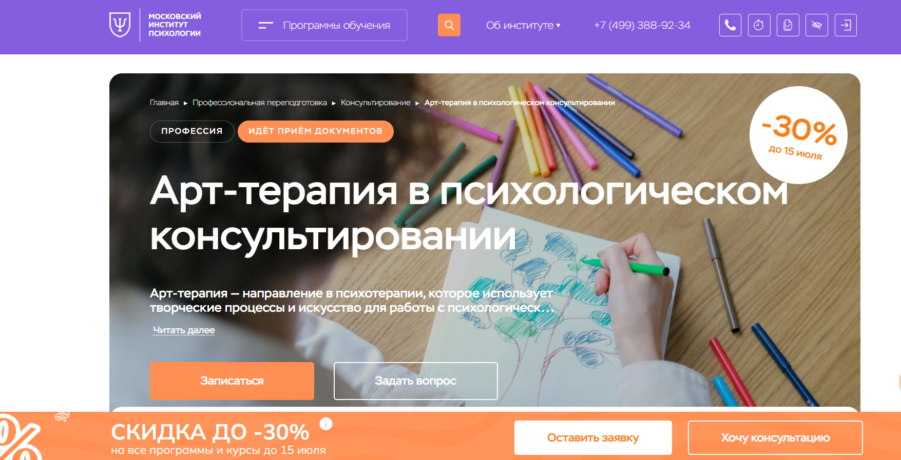
- ✅ Официальный сайт: mip.institute
- 💸 Цена: от 150 000 ₽ / год (со скидкой 30% )
- 💳 Рассрочка: доступна от 12 500 ₽ в месяц
- 📚 Формат: дистанционные видеоуроки, домашние задания, тесты, супервизии, демонстрационные сессии
- ⏳ Продолжительность: 8 или 14 месяцев
- 📜 Документ: диплом о профессиональной переподготовке, удостоверение о повышении квалификации
- 📝 Трудоустройство: участие в Центре практики и карьеры, поддержка преподавателей
- 🔷 Для кого подходит курс: для новичков, практикующих специалистов без диплома, желающих перейти к частной практике, и всех, кто хочет работать с клиентами индивидуально
Особенности:
Программа организована в дистанционном формате с удобным графиком занятий. Студенты получают доступ к образовательной платформе, где проходят лекции, тесты, практические задания и онлайн-сессии с преподавателями. Акцент сделан на освоение методик арт-терапии и применении их в индивидуальном психологическом консультировании. Поддержка кураторов и участие в профессиональном сообществе усиливают эффективность прохождения курса. Занятия включают практические блоки по технике песочной терапии, групповому и семейному консультированию. Выдается диплом, подтверждающий квалификацию, и создается портфолио, готовое к применению в практике психолога.
Чему учатся студенты:
- Применять методы арт-терапии в работе с клиентами
- Понимать основы арт-терапевтического подхода и творческого процесса
- Проводить арт-терапевтические занятия в индивидуальном и групповом формате
- Использовать техники песочной терапии, сказкотерапии, танцевальной и музыкальной терапии
- Работать с психосоматикой, травмами, ПТСР, кризисами
- Развивать профессиональные навыки и этику консультирования
Преподаватели:
- Додонова Ирина Викторовна — практикующий психолог, коуч с международными сертификатами ICU и ICA, руководитель программы
- Лодзь Анна Николаевна — психоаналитический психотерапевт, супервизор, член Балинтовской ассоциации России
Преимущества:
- Современный формат дистанционного обучения
- Освоение актуальных методов арт-терапии
- Доступ к профессиональному сообществу выпускников
- Гибкий график и возможность совмещать обучение с работой
- Дипломы с международными приложениями
- Развитие навыков для частной практики
- Индивидуальный подход преподавателей
- Практическая направленность занятий
Отзывы учеников:
Студенты отмечают, что курс помогает получить востребованную профессию в удобном формате. Положительно оцениваются насыщенные лекции без «воды», поддержка кураторов, а также реальная возможность начать практику уже в процессе обучения. Особенно часто хвалят доступную платформу, качество материалов и помощь в построении карьеры после окончания курсов.
Перейти на официальный сайт курса2. 🏆 Психолог-консультант. Арт-терапевт – Национальная академия дополнительного профессионального образования
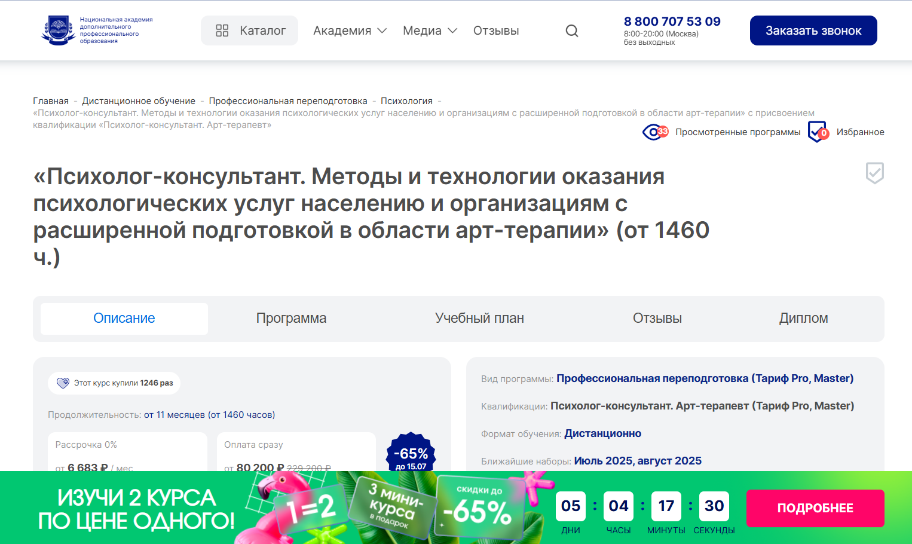
- ✅ Официальный сайт: nadpo.ru
- 💸 Цена обучения: от 80 200 ₽ (229 200 ₽ – скидка до 65% ).
- 💳 Рассрочка: от 6 683 ₽/мес, 0% переплаты.
- 📚 Формат: дистанционное обучение, включает видеоуроки, тесты, доступ к библиотекам ЛитРес и БиблиоКлуб, практические задания, консультации, поддержка куратора.
- ⏳ Продолжительность: от 11 месяцев (от 1460 часов).
- 📜 Документ: диплом установленного образца, вносится в ФИС ФРДО.
- 📝 Трудоустройство: предоставление доступа к платформе с реальными клиентами, помощь в составлении резюме и сопровождении на собеседованиях.
- 🔷 Для кого подходит курс: для будущих арт-терапевтов, практикующих психологов, педагогов, социальных работников, желающих работать с индивидуальными клиентами или в формате групповой терапии.
Особенности:
Программа построена с акцентом на практическое применение методов арт-терапии, что позволяет с первых занятий использовать полученные знания в работе с индивидуальными клиентами и в групповых занятиях. Дистанционный формат позволяет совмещать обучение с личной терапией или профессиональной деятельностью. Студенты осваивают методы арт-терапии, включая песочную терапию и интермодальную терапию. Формат обучения адаптирован под индивидуальный график. В процессе обучения слушатели получают доступ к образовательной платформе и участвуют в реальных арт-терапевтических сессиях. По окончании курса выдается диплом, подтверждающий квалификацию «Психолог-консультант. Арт-терапевт».
Чему учатся студенты:
- Применять технику арт-терапии в индивидуальном психологическом консультировании
- Использовать методы арт-терапии в групповых форматах
- Проводить арт-терапевтические занятия с детьми и взрослыми
- Работать с подходами арт-терапии в семейной терапии
- Анализировать и интерпретировать художественные образы в терапии
- Встраивать арт-терапевтические методики в психологическую практику
Преподаватели:
- Гусева Анна Михайловна — арт-терапевт, преподаватель НИППО, практикующий психолог, член арт-терапевтической ассоциации
- Фомина Татьяна Александровна — психолог, куратор дистанционных образовательных программ, автор методик арт-терапии
- Моисеева Наталья Игоревна — преподаватель практической психологии, эксперт в песочной терапии
Преимущества:
- Удобный дистанционный формат обучения с индивидуальным графиком
- Доступ к клиентам через внутреннюю платформу института
- Более 30% практических занятий с акцентом на применение арт-терапевтических методов
- Программа включает современные направления арт-терапии, включая песочную и музыкальную терапию
- Курс подходит для совмещения с личной практикой
- Документы об окончании обучения вносятся в государственный реестр
- 0% рассрочка и кэшбэк баллами на будущие программы
- Поддержка кураторов на всех этапах прохождения курса
Отзывы учеников:
Студенты отмечают высокое качество преподавания, удобный формат дистанционного обучения, доступность учебных материалов и практическую направленность программы. Особенно хвалят песочную терапию и возможность работать с реальными клиентами уже в процессе обучения.
Перейти на официальный сайт курса3. 🏆 Арт-терапия в практике психолога – Онлайн институт Smart
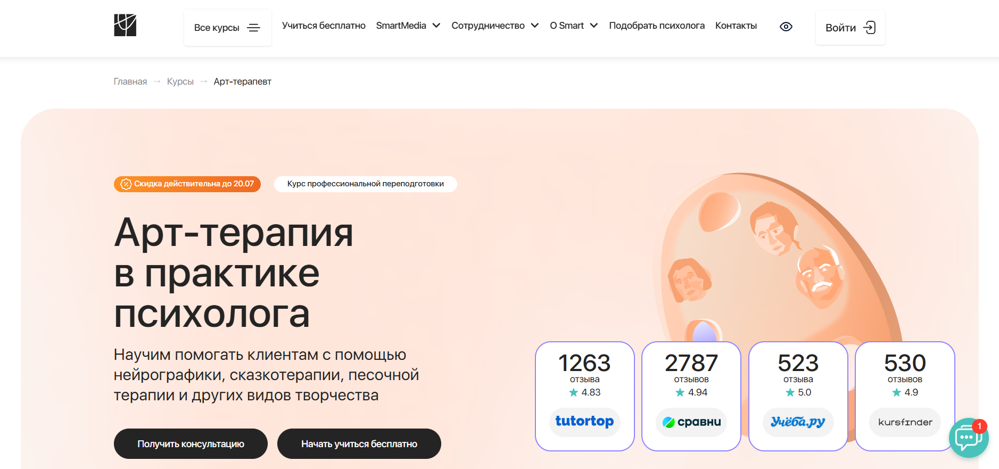
- ✅ Официальный сайт: smart-inc.ru
- 💸 Цена обучения: от 119 900 ₽ со скидкой (вместо 185 000 ₽)
- 💳 Рассрочка: от 4996 ₽/мес на 3, 6, 12 или 24 месяца без переплат
- 📚 Формат: дистанционное обучение через образовательную платформу: видеолекции, практические задания, онлайн-сессии и супервизии
- ⏳ Продолжительность: от 6 до 10 месяцев, объем — от 500 до 756 часов
- 📜 Документ: диплом о профессиональной переподготовке установленного образца, зарегистрированный в ФРДО
- 📝 Трудоустройство: помощь в поиске первых клиентов, индивидуальные карьерные консультации и супервизии
- 🔷 Для кого подходит курс: психологам, коучам, педагогам, начинающим и тем, кто хочет получить профессию психолога
Особенности:
Курс совмещает дистанционный формат и практико-ориентированный подход: студенты обучаются техникам работы с индивидуальными клиентами и в групповой терапии. Программа охватывает песочную терапию, нейрографику, работу с глиной и другие арт-терапевтические методики. Доступ к материалам круглосуточный, занятия проходят в удобном формате. Образовательный процесс организован так, чтобы освоить профессиональные навыки и применять методы арт-терапии в практике психолога уже во время курса. После завершения обучения участники получают диплом, признанный на государственном уровне.
Чему учатся студенты:
- Применять методы арт-терапии в индивидуальном психологическом консультировании
- Проводить групповые арт-терапевтические занятия
- Работать с песочной терапией, ароматерапией, изотерапией и другими техниками
- Использовать арт-терапевтический подход при стрессах, фобиях, депрессии и возрастных кризисах
- Вести личную терапию и развивать навыки самоанализа
- Понимать принципы интермодальной терапии и интегрировать творчество в психотерапевтический процесс
Преподаватели:
- Юлия Лебедева — кандидат педагогических наук, семейный, детский и перинатальный психолог, специалист по МАК
- Кристина Куранова — практикующий психолог, представитель института в ОППЛ
Преимущества:
- Подходит для любого уровня подготовки: от новичков до практикующих специалистов
- Гарантированное получение диплома установленного образца
- Гибкий график обучения в любом удобном темпе
- Доступ к платформе и всем материалам 24/7
- Сильная поддержка кураторов, менторов и преподавателей
- Возможность начать собственную практику ещё до окончания курсов
- Партнёрство с ОППЛ и АППП для признания квалификации
- Курс включает актуальные арт-терапевтические техники и реальные кейсы
Отзывы учеников:
Студенты особенно отмечают удобный формат обучения, качественную обратную связь от кураторов и большое количество практики. Положительно отзываются о возможности совмещать обучение с работой и личной жизнью. Часто упоминаются помощь в поиске клиентов и поддержка даже после окончания курсов.
Перейти на официальный сайт курса4. Арт-терапия в практической психологической помощи: курс обучения «Арт-терапевт» — АНО НИИДПО
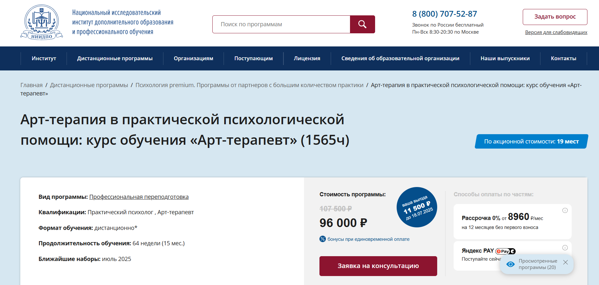
- ✅ Официальный сайт: niidpo.ru
- 💸 Цена: 96 000 ₽ (вместо 107 500 ₽)
- 💳 Рассрочка: от 8 960 ₽/мес на 12 месяцев, без первого взноса и переплат
- 📚 Формат: дистанционное обучение, видеолекции, практические задания, тесты, супервизии, доступ к 1000+ вебинарам
- ⏳ Продолжительность: 64 недели (15 месяцев)
- 📜 Документ: диплом о профессиональной переподготовке с правом на работу в сфере психологического консультирования
- 📝 Трудоустройство: подготовка к частной и организационной практике, консультациям, тренингам, психотерапии
- 🔷 Для кого подходит курс: начинающим и действующим психологам, интересующимся арт-терапией, желающим освоить методы работы с детьми, подростками и взрослыми
Особенности:
Программа обучения позволяет пройти профессиональную переподготовку по арт-терапии в дистанционном формате без привязки к месту проживания. Студенты осваивают методы арт-терапии и интермодальной терапии, получают доступ к образовательной платформе с теоретическими и практическими материалами. После завершения курсов выдается диплом московского института, действительный в РФ и за рубежом. Дистанционные образовательные технологии дают возможность совмещать обучение с работой или семьей. Практические занятия ориентированы на развитие профессиональных навыков в индивидуальной и групповой терапии. Особое внимание уделяется техникам, применяемым в арт-терапевтическом процессе, а также личной терапии и супервизии в рамках курса. Поддержка кураторов и преподавателей ведется на всех этапах обучения.
Чему учатся студенты:
- Применять методы арт-терапии в работе с чувствами и тревожностью клиентов
- Использовать технику арт-терапии в индивидуальной и групповой терапии
- Внедрять песочную, музыкальную, сказочную и глинотерапию в психологическую практику
- Проводить психологическое консультирование и психодиагностику
- Осваивать интермодальную терапию и совмещение творческих подходов
- Применять арт-терапевтическую методику при работе с детьми, подростками и взрослыми
Преподаватели:
- Архипова Елена Алексеевна — клинический психолог, арт-терапевт, специалист по Expressive Arts Therapy
- Ахмадеева Диана Павловна — психолог, арт-терапевт, специалист по интермодальной терапии, детский психолог
- Гаврилова Наталья Борисовна — психолог, супервизор, специалист по индивидуальному, семейному и групповому консультированию
Преимущества:
- Доступ к материалам и вебинарам сохраняется бессрочно
- Формат обучения подходит под индивидуальный график
- Возможность получить практический опыт в безопасной среде
- Поддержка преподавателей на протяжении всего обучения
- Доступная стоимость и гибкие условия оплаты
- Не требуется очного присутствия на занятиях
- Выдается диплом, действующий в России и странах СНГ
- Платформа обучения адаптирована под мобильные устройства
Отзывы учеников:
В отзывах студенты отмечают насыщенность материала и практическую направленность курса. Похвалу вызывает дистанционный формат, возможность совмещать обучение с работой, а также профессионализм преподавателей. Многим нравится наличие личной терапии и доступ к вебинарам даже после завершения обучения.
Перейти на официальный сайт курса5. Психолог арт-терапевт + MBA — Московский Институт Профессионального Образования
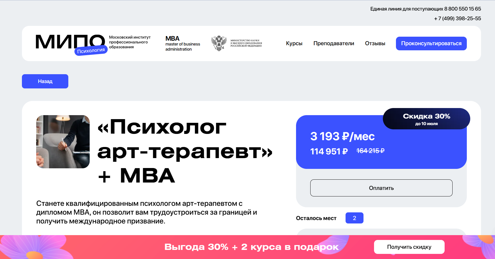- ✅ Официальный сайт: mipoin.ru
- 💸 Цена: 114 951 ₽ со скидкой 30%
- 💳 Рассрочка: 3 193 ₽/мес
- 📚 Формат: дистанционное обучение, вебинары, тесты, практические задания, доступ ко всем материалам сразу
- ⏳ Продолжительность: 15 месяцев
- 📜 Документ: три диплома о профессиональной переподготовке, международное приложение
- 📝 Трудоустройство: возможность начать практику после завершения курса
- 🔷 Для кого подходит курс: для начинающих, практикующих специалистов, социальных работников, желающих сменить профессию или повысить квалификацию
Особенности:
Программа обучения создана с фокусом на практику и удобный дистанционный формат. Студенты изучают ключевые методы арт-терапии и техники бизнес-коучинга. Подходит как для личной терапии, так и для работы с индивидуальными клиентами и в групповой терапии. Прохождение курса проходит по индивидуальному графику, в любом удобном темпе. Слушатели получают доступ к образовательной платформе с учебными материалами и поддержкой преподавателей. Благодаря арт-терапевтическому подходу, обучение охватывает различные направления психологической практики и позволяет совмещать обучение с работой. По завершении обучения выдается диплом с международным признанием.
Чему учатся студенты:
- Применению техник арт-терапии и фототерапии в работе с клиентами
- Работе с эмоциональными состояниями: тревога, вина, страхи
- Проведению арт-терапевтических сессий для разных возрастов
- Основам организационной и социальной психологии
- Методам карьерного коучинга и бизнес-консультирования
- Использованию арт-терапевтических методов для самопознания и реабилитации
- Психодиагностике и анализу работ клиентов
Преподаватели:
- Перемолотова Ирина — практикующий психолог, арт-терапевт, коуч, автор трансформационных игр
- Бербер Наталья — кандидат психологических наук, арт-терапевт, преподаватель
- Круглушина Олеся — консультирующий психолог, выпускник МГОУ
- Шавырина Анна — кандидат психологических наук, эксперт консультативного совета
- Пронькина Анастасия — клинический и КПТ-психолог
- Шушкина Людмила — семейный психолог, преподаватель, автор книг
- Рыбальченко Наталья — преподаватель философии МГУ, религиовед, психолог
- Дарменко Елена — научный специалист, бизнес-тренер
- Лебедев Александр — доцент МГТУ и МГИМО, кандидат экономических наук
- Лаврова Юлия — юридический психолог, гипнотерапевт, тренер
- Латынцева Ольга — семейный психолог, эксперт СМИ
Преимущества:
- Дистанционный формат обучения с доступом 24/7
- Выдается диплом международного образца
- Включены методики арт-терапии и интермодальной терапии
- Подходит для любого уровня подготовки
- Совмещается с основной работой или другими курсами
- Развитие практических навыков через реальные задания
- Обратная связь от кураторов и преподавателей
- Поддержка в построении личного профессионального бренда
Отзывы учеников:
Студенты чаще всего отмечают удобный формат обучения, насыщенность учебных материалов и практическую направленность. Хвалят поддержку кураторов, обратную связь и возможность совмещать курс с основной деятельностью. Высоко оценивается дистанционный формат и разнообразие арт-терапевтических методов.
Перейти на официальный сайт курса6. Арт-терапия — Московский институт технологий и управления
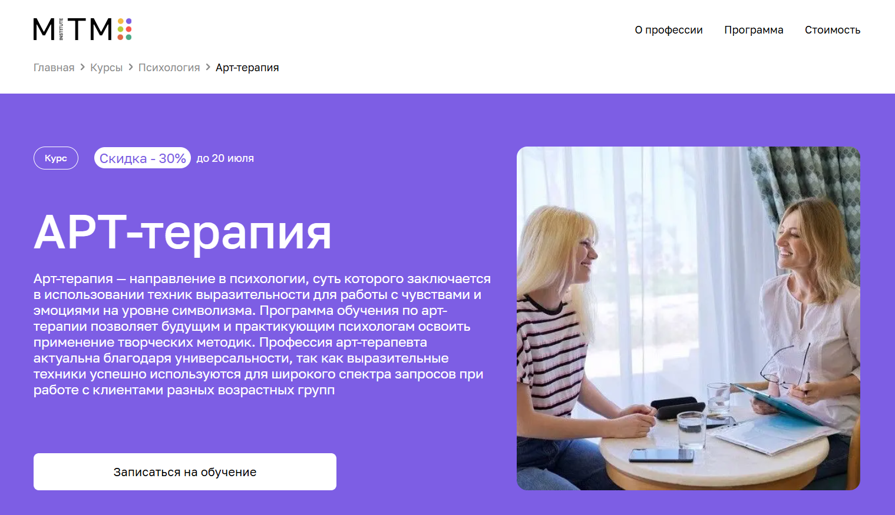
- ✅ Официальный сайт: mitm.institute
- 💸 Цена: 110 040 ₽ в месяц (со скидкой 30% ).
- 💳 Рассрочка: 9 170 ₽ в месяц на 12 месяцев без переплат от «Тинькофф Банка».
- 📚 Формат: дистанционное обучение с вебинарами, видеоуроками, практическими заданиями, супервизиями и доступом к материалам курса 24/7.
- ⏳ Продолжительность: 1 год, 1500 академических часов.
- 📜 Документ: диплом о профессиональной переподготовке государственного образца.
- 📝 Трудоустройство: получение актуальных практических навыков для работы в индивидуальной и групповой терапии.
- 🔷 Для кого подходит курс: для психологов, педагогов, соцработников, новичков без профильного образования и всех, кто интересуется терапией искусством.
Особенности:
Курс ориентирован на освоение методик арт-терапии через удобный дистанционный формат. Программа включает техники индивидуального и группового консультирования, с возможностью совмещать обучение с работой. Дистанционные технологии позволяют проходить занятия в любом темпе. Студенты получают поддержку кураторов и супервизоров, анализ клиентских кейсов и регулярные онлайн-вебинары. Особое внимание уделяется техникам выразительности и символизму в терапии. Учебный процесс адаптирован под современные требования работодателей. По окончании выдается государственный диплом, подтверждающий квалификацию. Обучение поможет применять арт-терапевтический подход в индивидуальной и семейной терапии, а также в работе с детьми и взрослыми в кризисных ситуациях.
Чему учатся студенты:
- Применять техники арт-терапии для работы с эмоциями и внутренними конфликтами
- Понимать структуру арт-терапевтической сессии
- Использовать фототерапию и сказкотерапию на практике
- Работать с сопротивлением клиентов в терапевтическом процессе
- Адаптировать методы под онлайн-формат
- Применять песочную и музыкальную терапию в работе с клиентами
Преподаватели:
- Шелухина Анна — магистр психологии, сертифицированный арт-терапевт, психолог-консультант
- Айрапетян Елена — магистр психологии, интегративный психолог, член Ассоциации когнитивно-поведенческой психотерапии
- Рахимкулова Анастасия — кандидат психологических наук, клинический и нейропсихолог, специалист по телесной терапии
Преимущества:
- Дистанционное обучение без отрыва от работы
- Пошаговая программа с поддержкой куратора и супервизора
- Гибкий индивидуальный график прохождения курса
- Доступ к чату с менторами и коллегами
- Возможность вернуть 13% от стоимости курса
- Обучение с фокусом на практике и актуальных методиках
- Адаптация под разные типы клиентов: дети, подростки, взрослые
- Доступ ко всем материалам и вебинарам на протяжении курса
Отзывы учеников:
Студенты отмечают удобную образовательную платформу, насыщенность курса практическими материалами и поддержку кураторов. Высоко ценится дистанционный формат и возможность совмещать учебу с работой. Часто выделяют индивидуальный подход, интересные занятия и актуальные техники, которые можно сразу внедрять в психологическую практику.
Перейти на официальный сайт курса7. Практический психолог и арт-терапевт — Институт прикладной психологии в социальной сфере
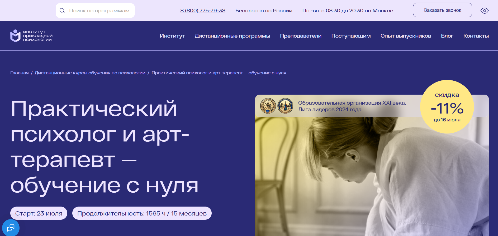- ✅ Официальный сайт: ippss.ru
- 💸 Цена: от 96 000 ₽ (со скидкой, полная стоимость — 107 500 ₽).
- 💳 Рассрочка: 8 958 ₽ в месяц 12 месяцев без переплат, через банки или Яндекс Пэй.
- 📚 Формат: дистанционное обучение, видеоуроки, конспекты, тесты, практические задания, супервизии, вебинары.
- ⏳ Продолжительность: 15 месяцев / 1565 академических часов / 8 часов в неделю.
- 📜 Документ: диплом о профессиональной переподготовке с квалификациями «Практический психолог», «Арт-терапевт».
- 📝 Трудоустройство: карьерные консультации, обучение продвижению, доступ к базе вакансий и поддержка на старте.
- 🔷 Для кого подходит курс: для желающих получить профессию психолога, изучить методики арт-терапии, совмещающих работу и учебу, интересующихся развитием в помогающей профессии.
Особенности:
Программа охватывает ключевые направления психологической и арт-терапевтической практики в дистанционном формате. Удобный формат обучения позволяет освоить технику арт-терапии и другие методы без отрыва от личных дел. Слушатели получают доступ к видеозаписям, практическим заданиям и консультациям. В процессе обучения применяется интермодальная терапия искусствами, а также песочная терапия и другие формы работы с клиентами. Сильная сторона курса — акцент на реальную практику: студенты проводят сессии, получают обратную связь и анализ от экспертов. В программе уделено внимание развитию профессиональных навыков, формированию личной практики и продвижению услуг на рынке.
Чему учатся студенты:
- Применять методы арт-терапии и индивидуального консультирования
- Использовать технику арт-терапии в работе с детьми, подростками и взрослыми
- Проводить диагностические и коррекционные сессии
- Разрабатывать программы занятий и использовать подходы арт-терапии в практике
- Анализировать результаты сессий, работать с отзывами и корректировать практику
- Работать в формате индивидуальных клиентов и групповой терапии
- Осваивать интермодальную терапию и песочную терапию как ключевые методы
Преподаватели:
- Пустыльникова Виктория Юрьевна — преподаватель психологических и филологических дисциплин, практикующий психолог
- Тимофеева Анастасия Александровна — клинический психолог, полимодальный психотерапевт, супервизор
- Грибоедова Оксана Ивановна — специалист в области детской психологии, преподаватель, автор 45+ научных публикаций
Преимущества:
- Дистанционный формат обучения с доступом к платформе в любое время
- Выдается диплом, подтверждающий квалификацию психолога и арт-терапевта
- Обширная база вебинаров и дополнительных материалов
- Работа с реальными клиентами под супервизией
- Возможность совмещать обучение с работой
- Индивидуальный подход и обратная связь от преподавателей
- Карьерная поддержка и продвижение услуг после окончания курсов
- Практическое применение техник арт-терапии и развитие личной практики
Отзывы учеников:
Слушатели курса отмечают удобный дистанционный формат, доступный язык материалов и профессионализм преподавателей. В числе плюсов — возможность получать обратную связь, использовать методики на практике и уверенно применять арт-терапевтические подходы в работе с клиентами. Студенты часто подчеркивают атмосферу поддержки и структурированную подачу учебных блоков.
Перейти на официальный сайт курса8. Арт-терапия — МШПП
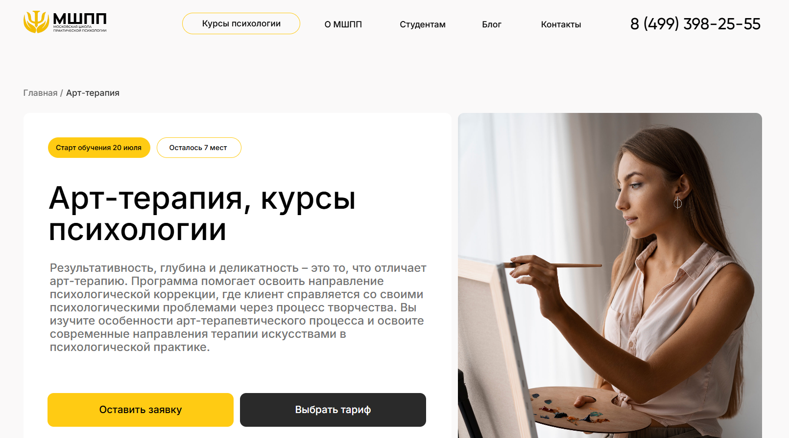
- ✅ Официальный сайт: mspp.online
- 💸 Цена: от 85 000 ₽ до 185 000 ₽
- 💳 Рассрочка: от 2 390 ₽ в месяц , от 3 до 36 месяцев, есть беспроцентный вариант от школы
- 📚 Формат: дистанционное обучение, видеоуроки, практические задания, супервизии, демосессии, чат с ментором, вебинары, очные практики
- ⏳ Продолжительность: 5 месяцев, 500–620 академических часов
- 📜 Документ: диплом о профессиональной переподготовке, международный диплом MBA
- 📝 Трудоустройство: сопровождение от карьерного центра, помощь при трудоустройстве
- 🔷 Для кого подходит курс: для начинающих, студентов, практикующих психологов, желающих расширить профессиональные навыки, начать частную практику или сменить профессию
Особенности:
Программа разработана с акцентом на практические навыки и современные методики арт-терапии. Обучение проходит в дистанционном формате с использованием удобной образовательной платформы. Курс включает групповые и индивидуальные занятия, интермодальную терапию, работу в тройках и песочную терапию. Студенты изучают методы арт-терапии и техники работы с индивидуальными клиентами. После завершения обучения выдается диплом, подтверждающий квалификацию, и открываются перспективы для начала профессиональной практики, в том числе с международными клиентами.
Чему учатся студенты:
- Проводить индивидуальную и групповую терапию с применением техник арт-терапии
- Использовать песочную терапию и методы интермодального подхода
- Формировать индивидуальные терапевтические планы
- Проводить диагностику и оценку состояния клиентов
- Разрабатывать сценарии арт-терапевтических занятий
- Владеть методиками работы с детьми, подростками и взрослыми
- Учитывать особенности дистанционного формата и этику работы онлайн
Преподаватели:
- 42 эксперта: практикующие психотерапевты и психологи
- Все преподаватели имеют опыт в психологической практике и сертифицированы по направлению арт-терапии
Преимущества:
- Выдается диплом, соответствующий европейским стандартам
- Группы до 5 человек для глубокой проработки навыков
- Доступ к образовательной платформе 24/7
- Программа включает бонусные модули по продвижению и онлайн-кабинету психолога
- Обратная связь и поддержка кураторов на каждом этапе
- Возможность совмещать обучение с работой благодаря индивидуальному графику
- Карьерный центр помогает трудоустроиться и адаптироваться на новом месте
- Участие в сообществе выпускников и тематических встречах
Отзывы учеников:
Слушатели отмечают удобный дистанционный формат, насыщенность практическими занятиями и высокую квалификацию преподавателей. Позитивно оценивают поддержку кураторов, доступность учебных материалов и возможность начать консультировать уже в процессе прохождения курса.
Перейти на официальный сайт курса9. Арт-терапия в практической психологической помощи — Московский Институт Профессионального Образования
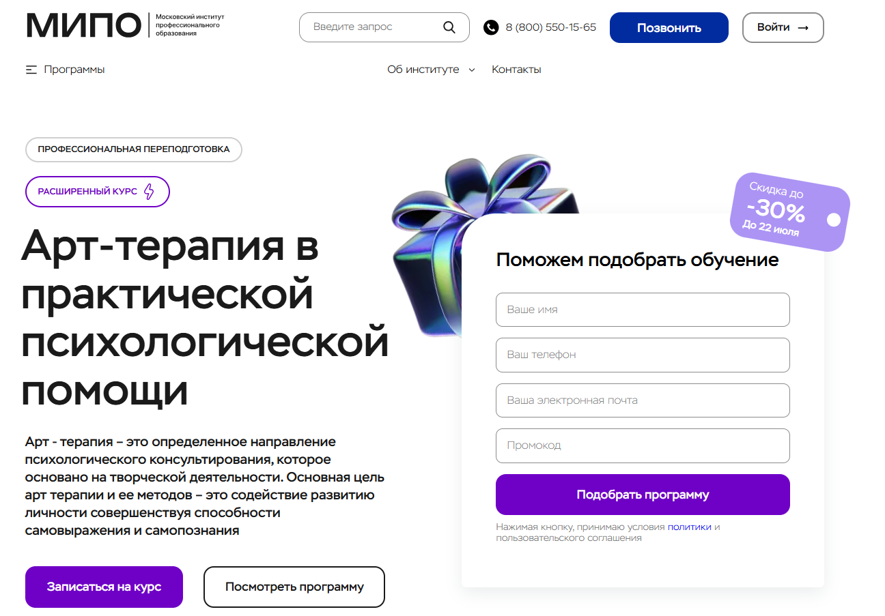
- ✅ Официальный сайт: mipo.msk.ru
- 💸 Цена: от 63 579 ₽ до 102 870 ₽ в зависимости от тарифа (со скидкой до -30% )
- 💳 Рассрочка: доступна на 24 месяца, от 2 650 ₽/мес
- 📚 Формат: дистанционное обучение с доступом к онлайн-вебинарам, тестам, лекциям, практическим материалам и поддержкой куратора
- ⏳ Продолжительность: 7 месяцев, 562 академических часа
- 📜 Документ: диплом о профессиональной переподготовке с регистрацией в ФИС-ФРДО
- 📝 Трудоустройство: поддержка Центра развития карьеры, диплом котируется в России и за рубежом
- 🔷 Для кого подходит курс: для тех, кто хочет освоить профессию психолога с нуля, подтвердить опыт дипломом или применять знания в личной жизни
Особенности:
Программа обучения реализуется в дистанционном формате с доступом через образовательную платформу. Все занятия проходят онлайн, что удобно для совмещения с работой. Формат обучения включает вебинары, песочную терапию, практические задания, тесты и помощь менторов. Слушатели осваивают методы арт-терапии, включая интермодальную терапию и семейную терапию. После завершения курсов выдается диплом установленного образца, а выпускники отмечают, что арт-терапия помогает клиентам уже с первых консультаций. Обучение ориентировано на развитие практических навыков в индивидуальном психологическом консультировании. В курс включены методики арт-терапии, позволяющие проводить как личную терапию, так и работать с группой.
Чему учатся студенты:
- Применять методы арт-терапии в индивидуальной и групповой работе
- Использовать песочную терапию, сказкотерапию, технику арт-терапии и интермодальную терапию
- Работать с эмоциональной сферой: тревога, страхи, вина, обида, гнев
- Проводить арт-терапевтические занятия с клиентами
- Прорабатывать фобии, депрессивные состояния, внутренние конфликты
- Повышать осознанность и развивать самопознание клиентов
Преподаватели:
- Бербер Наталья — кандидат психологических наук, сертифицированный НЛП-практик, арт-терапевт
- Рыбальченко Наталья — преподаватель философии, выпускница философского факультета МГУ
- Круглушина Олеся — семейный практикующий психолог, преподаватель школы психологического консультирования
- Перемолотова Ирина Александровна — член международной ассоциации арт-терапевтов, коуч ICI
- Урывчикова Татьяна Геннадьевна — клинический психолог, нейропсихолог, арт-терапевт
- Цяпало Анна — сертифицированный сексотерапевт, арт-терапевт, член ассоциации психоаналитического коучинга
Преимущества:
- Дистанционное обучение на удобной образовательной платформе
- Арт-терапевтические методики адаптированы под индивидуальных клиентов и групповой формат
- После прохождения курса выдается диплом, подтвержденный в ФИС-ФРДО
- Слушатели получают доступ к практическим материалам и обратной связи от преподавателей
- Можно совмещать обучение с работой благодаря гибкому графику
- Возможность освоить методы арт-терапии и применять их в реальной практике
- Курс включает поддержку менторов, кураторов и службу заботы
- Образование подходит как для новичков, так и для практикующих специалистов
Отзывы учеников:
Студенты хвалят дистанционный формат обучения, удобную систему подачи материала и постоянную обратную связь от кураторов. Многие отмечают, что курс помогает глубже понять психологические процессы и начать частную практику. Песочная терапия и техники арт-терапии вызывают наибольший интерес и применяются на практике сразу после прохождения обучения.
Перейти на официальный сайт курса10. Арт-терапия в практике психолога – Национальный центральный институт развития дополнительного образования
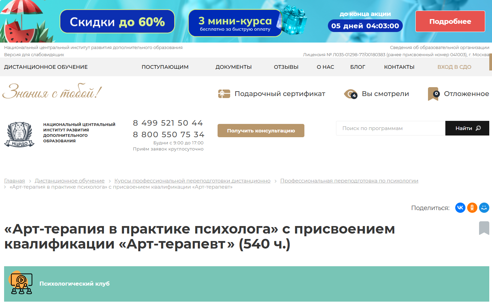
- ✅ Официальный сайт: ncrdo.ru
- 💸 Цена: 41 900 ₽ (вместо 75 000 ₽ )
- 💳 Рассрочка: 1 164 ₽ в месяц на 36 месяцев
- 📚 Формат: дистанционное обучение, аудиолекции, вебинары, тесты, практические задания, доступ к ЭБС и ЛитРес
- ⏳ Продолжительность: 4 месяца (540 часов)
- 📜 Документ: диплом о профессиональной переподготовке
- 📝 Трудоустройство: HR-консультации и поддержка в карьерном росте
- 🔷 Для кого подходит курс: для психологов, педагогов, консультантов и всех, кто хочет освоить методы арт-терапии
Особенности:
Программа построена на применении арт-терапевтических методов для работы с индивидуальными клиентами и в рамках групповой терапии. Дистанционный формат позволяет проходить обучение в любом удобном месте и в индивидуальном темпе. Особое внимание уделяется практическим навыкам: упражнениям, проектированию занятий, анализу клиентских кейсов. Участники курса получают доступ к платформе с методическими материалами, видеолекциями и заданиями. Курс включает песочную терапию, мандалотерапию, музыкальную терапию, фото- и кинотерапию. Обучение направлено на развитие профессиональных навыков и подготовку к проведению личной терапии и индивидуальных консультаций. Завершение обучения подтверждается дипломом, зарегистрированным в федеральной системе ФИС ФРДО.
Чему учатся студенты:
- Применять методы арт-терапии в индивидуальной и групповой работе
- Использовать технику арт-терапии в работе с психосоматикой и самооценкой
- Проводить арт-терапевтические занятия в семейной терапии
- Разрабатывать творческие занятия и применять визуальные и музыкальные методы
- Анализировать и диагностировать психоэмоциональные состояния через творчество
- Работать с метафорическими картами и проектными техниками
Преподаватели:
- Мельникова Елена Васильевна — опыт работы с 2010 года
- Тышкевич Марина Юрьевна — практикующий специалист с 2006 года
- Шевченко Дария Игоревна — опыт преподавания с 2018 года
- Салихова Мария Романовна — ведет профессиональную деятельность с 2007 года
Преимущества:
- Дистанционный формат обучения с удобной платформой и доступом к материалам 24/7
- Программа включает практическое применение техник арт-терапии
- Индивидуальный график обучения и гибкие сроки прохождения курса
- Официальный диплом, внесённый в Федеральный реестр ФИС ФРДО
- Поддержка преподавателей и кураторов в процессе обучения
- Возможность совмещать обучение с основной занятостью
- Доступ к библиотеке ЛитРес и ЭБС бесплатно
- Консультации по карьере и помощь в профессиональном старте
Отзывы учеников:
Слушатели положительно оценивают удобный формат обучения, насыщенность программы и индивидуальный подход. Многие подчеркивают полезность методик арт-терапии в реальной психологической практике и отмечают доступную форму подачи материала. В отзывах часто упоминается, что курс помогает в личной терапии и даёт сильную основу для работы с клиентами.
Перейти на официальный сайт курса11. Арт-терапия – Институт Профессионального Образования
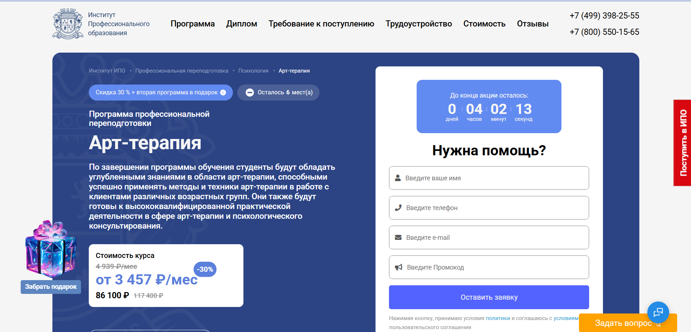
- ✅ Официальный сайт: ipo.msk.ru
- 💸 Цена обучения: от 86 100 ₽ (со скидкой до 30%).
- 💳 Рассрочка: от 3 457 ₽ в месяц до 24 месяцев.
- 📚 Формат: дистанционный формат обучения: видеолекции, тесты, домашние задания, вебинары, менторские сессии.
- ⏳ Продолжительность: 602 часа (около 7 месяцев).
- 📜 Документ: выдается диплом о профессиональной переподготовке.
- 📝 Трудоустройство: карьерная поддержка, составление резюме, подготовка к собеседованиям, база вакансий.
- 🔷 Для кого подходит курс: психологам, педагогам, специалистам по работе с детьми и взрослыми, а также для личного развития.
Особенности:
Курс реализуется в дистанционном формате, что удобно для тех, кто совмещает обучение с работой. Подходит для специалистов, работающих с эмоциональными трудностями и внутренними конфликтами через творчество. В рамках обучения слушатели осваивают методы арт-терапии, песочную терапию, интермодальную терапию и другие арт-терапевтические методики. Занятия включают практику на платформе с кураторами и менторами. Предусмотрен гибкий график занятий и бессрочный доступ к материалам. Выпускники получают диплом, который дает право вести практику. Возможна работа с индивидуальными клиентами и в рамках групповой терапии.
Чему учатся студенты:
- Проводить арт-терапевтические сессии индивидуально и в группах
- Применять технику арт-терапии и методы арт-терапевтического воздействия
- Анализировать творческие работы клиентов
- Работать в направлениях арт-терапии с детьми, взрослыми, семьями
- Использовать арт-терапию для эмоционального восстановления
- Применять песочную терапию и музыкальную терапию
- Понимать основы арт-терапевтического подхода и этику профессии
- Интегрировать знания в практике психолога
Преподаватели:
- Бербер Наталья Николаевна — кандидат психологических наук, профессиональный психолог
- Рыбальченко Наталья Викторовна — преподаватель философии, практикующий психолог
- Круглушина Олеся Александровна — психолог, консультант, преподаватель с опытом семейной терапии
Преимущества:
- Гибкий график обучения с возможностью учиться в любом удобном темпе
- Актуальные методики арт-терапии с применением дистанционных технологий
- Разнообразие форматов: видеоуроки, вебинары, практические задания
- Поддержка кураторов и менторов на всех этапах прохождения курса
- Доступ к профессиональному сообществу и библиотеке ЮРАЙТ
- Подготовка к работе с индивидуальными клиентами и в группах
- Официальный диплом, подтверждающий квалификацию арт-терапевта
- Возможность вернуть часть стоимости через налоговый вычет
Отзывы учеников:
Студенты отмечают удобный формат обучения, насыщенную практику и квалификацию преподавателей. Часто упоминают, что курс помогает применять арт-терапевтические методы в личной практике и работе с клиентами. Отдельно выделяют качественную обратную связь и поддержку в трудоустройстве после завершения программы.
Перейти на официальный сайт курса12. Психолог-консультант. Арт-терапевт – Центральная академия профессиональной переподготовки и повышения квалификации кадров
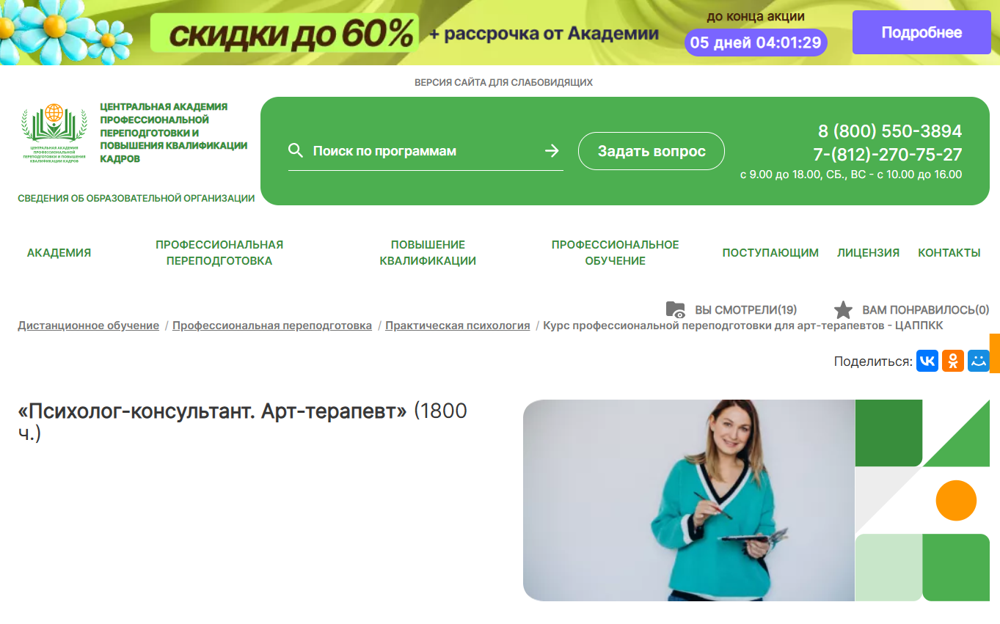
- ✅ Официальный сайт: appkk.ru
- 💸 Цена: 57 600 ₽ (вместо 104 800 ₽)
- 💳 Рассрочка: от 1 600 ₽ в месяц на 36 месяцев
- 📚 Формат: дистанционное обучение с доступом к видеолекциям, вебинарам, тестам, аудиоматериалам и библиотеке
- ⏳ Продолжительность: 11 месяцев (1800 академических часов)
- 📜 Документ: диплом о профессиональной переподготовке, вносится в реестр ФИС ФРДО
- 📝 Трудоустройство: помощь HR-наставника с резюме, консультации по собеседованиям и подбор актуальных вакансий
- 🔷 Для кого подходит курс: для получающих или имеющих средне-профессиональное или высшее образование, а также специалистов, желающих получить новые профессиональные навыки в сфере арт-терапии
Особенности:
Курс организован в дистанционном формате обучения, что позволяет студентам совмещать профессиональную переподготовку с работой или другими занятиями. Образовательная платформа работает круглосуточно и предоставляет доступ ко всем материалам без ограничений. Техподдержка и кураторская поддержка работают ежедневно, включая выходные. Материалы курса соответствуют современным профессиональным стандартам, используются авторские методики и актуальные техники арт-терапии, включая песочную, музыкальную и интермодальную терапию. Обучение подходит для личной терапии, работы с индивидуальными клиентами, в рамках групповой терапии и других направлений психологической практики. После завершения обучения слушатели получают документ, заносящийся в государственный реестр, подтверждающий квалификацию арт-терапевта.
Чему учатся студенты:
- Применять методы арт-терапии в индивидуальном и групповом консультировании
- Владеть техникой арт-терапевтической диагностики
- Проводить занятия по песочной терапии и интермодальной терапии
- Организовывать арт-терапевтические занятия с детьми и взрослыми
- Осваивать профессиональные навыки консультирования с использованием арт-терапевтических методов
- Создавать программы личной терапии и корректирующей помощи
Преподаватели:
- Программа составлена опытными методистами академии с участием преподавателей-практиков
- Лекции читают специалисты с практическим опытом в области арт-терапии и психологии
- Анастасия Регнер — HR-наставник, бизнес-тренер, участник международных конференций, специалист по коммуникациям
Преимущества:
- Обучение в дистанционном формате с гибким графиком
- Бессрочный доступ к материалам и библиотеке вебинаров
- Документы, внесённые в федеральный реестр ФИС ФРДО
- Поддержка куратора и консультанта на каждом этапе
- Возможность совмещать обучение с личной практикой
- Обширная теоретическая база и практические задания
- Доступ к платформе даже без интернета
Отзывы учеников:
Слушатели высоко оценивают удобный формат дистанционного обучения, доступность материалов в любое время и поддержку преподавателей. Особенно отмечается возможность совмещать прохождение курса с работой, а также помощь с трудоустройством после завершения программы. Учащиеся ценят практические навыки, которые можно сразу применять в психологической практике.
Перейти на официальный сайт курса13. Практическое использование методов арт-терапии — Московский институт психологии
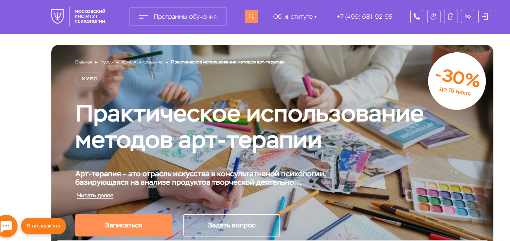
- ✅ Официальный сайт: mip.institute
- 💸 Цена обучения: 25 446 ₽ (со скидкой 30% , полная стоимость — 36 000 ₽).
- 💳 Рассрочка: возможна от 2 121 ₽ в месяц, подробности при записи на курс.
- 📚 Формат: дистанционное обучение через образовательную платформу, включает видеолекции, тесты, домашние задания, вебинары, супервизии и проектную работу.
- ⏳ Продолжительность: 1 месяц, 72 академических часа.
- 📜 Документ: удостоверение о повышении квалификации, выдается диплом с международным приложением.
- 📝 Трудоустройство: возможность официального трудоустройства и повышения дохода как частнопрактикующий специалист.
- 🔷 Для кого подходит курс: для начинающих психологов, действующих специалистов, а также тех, кто хочет освоить методы терапии для личной практики.
Особенности:
Курс полностью адаптирован под дистанционную форму обучения и подойдет тем, кто ценит удобный график. Программа охватывает ключевые арт-терапевтические подходы, включая песочную и интермодальную терапию, а также техники работы с метафорическими картами. Занятия проходят на образовательной платформе с постоянной поддержкой кураторов и преподавателей. Важной частью является практика: разбор клиентских кейсов, супервизии и арт-терапевтические задания. После завершения обучения выдается диплом, позволяющий вести индивидуальную психологическую работу. Освоенные техники можно применять как в личной терапии, так и в работе с индивидуальными клиентами и в групповой терапии.
Чему учатся студенты:
- Пониманию основ арт-терапевтического процесса
- Проведению диагностики с помощью методов арт-терапии
- Применению техник арт-коучинга и арт-терапевтических упражнений
- Работе с клиентами разных возрастных групп
- Использованию песочной и фототерапии в практике
- Структурированию сессий индивидуального психологического консультирования
Преподаватели:
- Перемолотова Ирина Александровна — семейный психолог, КПТ, арт-терапевт, гештальт-терапевт, EMDR, нейропсихолог, коуч, автор трансформационных игр, член профессиональных ассоциаций КПП, ICI, ОППЛ.
Преимущества:
- Обучение полностью проходит в дистанционном формате, подходит для любого графика
- В курсе рассматриваются техники арт-терапии, которые легко применять на практике
- Можно совмещать обучение с личной практикой и другими занятиями
- Выдается диплом, подтверждающий квалификацию
- Подходит для применения в индивидуальной и семейной терапии
- Обратная связь от преподавателей и супервизоров
- Доступ к библиотеке и вебинарам во время прохождения курса
- Курс помогает в освоении востребованной профессии психолога
Отзывы учеников:
Студенты хвалят программу за удобный дистанционный формат, актуальность знаний и сильный преподавательский состав. Особенно отмечают практические занятия и возможность применить методики сразу после обучения. Многие отмечают повышение уверенности в своей практике и удобный формат взаимодействия с преподавателями.
Перейти на официальный сайт курса14. Арт-педагогика и арт-терапевтические технологии – Институт прикладной психологии в социальной сфере
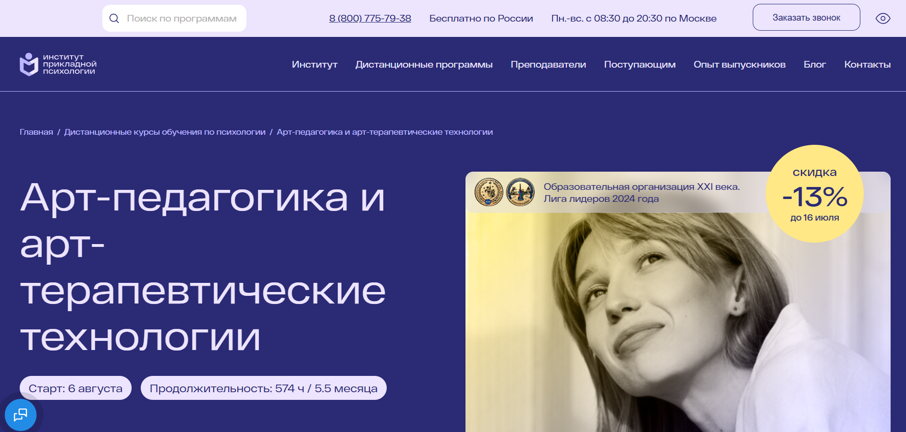
- ✅ Официальный сайт: ippss.ru
- 💸 Цена: от 41 500 ₽ со скидкой 13%
- 💳 Рассрочка: доступна 3 983 ₽ в месяц, без переплат — от банков или через Яндекс Пэй
- 📚 Формат: дистанционное обучение, видеолекции, практические задания, консультации, супервизия, доступ к библиотеке и вебинарам
- ⏳ Продолжительность: 5,5 месяцев / 574 академических часа
- 📜 Документ: диплом о профессиональной переподготовке с квалификацией «Арт-педагог»
- 📝 Трудоустройство: карьерные консультации, обучение продвижению и личному бренду, доступ к базе вакансий
- 🔷 Для кого подходит курс: для специалистов с высшим или средне-профессиональным образованием, желающих работать в сфере арт-терапии, семейной и групповой терапии
Особенности:
Обучение проходит в дистанционном формате с доступом к образовательной платформе 24/7. Программа полностью соответствует требованиям ФГОС и профессионального стандарта «Педагог-психолог». В процессе освоения методик арт-терапии студенты разрабатывают собственную арт-педагогическую программу и получают обратную связь от экспертов. В курс включены практикумы, личные консультации, супервизия, занятия по формированию личного бренда. Благодаря гибкому формату обучения и индивидуальному графику студенты могут совмещать прохождение курса с работой и личной жизнью. После завершения обучения выдается диплом государственного образца, который регистрируется в ФИС ФРДО.
Чему учатся студенты:
- Применять методики арт-терапии и терапии искусствами на практике
- Проводить индивидуальные и групповые арт-терапевтические занятия
- Использовать песочную терапию, интермодальную терапию, сказкотерапию и другие направления
- Разрабатывать собственные программы по арт-терапевтической работе
- Проводить диагностику и консультирование клиентов
- Создавать безопасное терапевтическое пространство
- Развивать личный бренд и строить карьеру в психологии
Преподаватели:
- Гаврилова Наталья Борисовна — психолог, арт-терапевт, супервизор, выпускница МГУ, автор метафорических карт
- Архипова Елена Алексеевна — клинический психолог, преподаватель, сертифицированный специалист по Expressive Arts Therapy
- Михайлова Наталья Владимировна — арт-терапевт, психолог, выпускница МГУ, преподаватель Expressive Arts Therapy
- Мариничева Светлана Игоревна — арт-терапевт, дипломированный Монтессори-ассистент, выпускница МГУ
Преимущества:
- Обучение полностью дистанционное — можно учиться в любом удобном месте
- Диплом дает право официально работать по профессии арт-терапевта
- Индивидуальные и групповые консультации с опытными экспертами
- Доступ к 10 000+ записям вебинаров и электронной библиотеке
- Поддержка карьерного центра — резюме, поиск клиентов, личный бренд
- Формат обучения гибкий — можно совмещать с работой
- Методы арт-терапии отработаны на практике с реальными кейсами
- Сопровождение кураторов и преподавателей на каждом этапе
Отзывы учеников:
Студенты отмечают удобный формат обучения, насыщенную практическую часть и профессионализм преподавателей. Многие положительно отзываются о возможности совмещать дистанционные занятия с личной практикой и получать поддержку от кураторов и карьерных экспертов. Высоко оценивается глубина преподавания методов арт-терапии и возможность применять техники уже в процессе обучения.
Перейти на официальный сайт курса15. Арт-терапия: профессиональная переподготовка — учебный центр АПОК
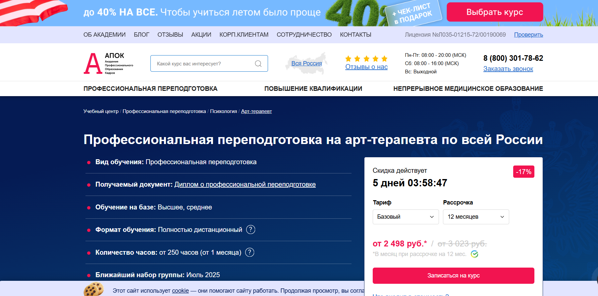- ✅ Официальный сайт: apokdpo.ru
- 💸 Цена: от 29 980 ₽ (со скидкой 17% )
- 💳 Рассрочка: доступна на 12 месяцев, от 2 498 ₽ в месяц
- 📚 Формат: дистанционное обучение, включает видеоуроки, тестирование, доступ к образовательной платформе
- ⏳ Продолжительность: от 1 месяца (250+ часов)
- 📜 Документ: выдается диплом о профессиональной переподготовке, регистрируется в ФИС ФРДО
- 📝 Трудоустройство: способствует карьерному росту и продвижению
- 🔷 Для кого подходит курс: для специалистов с высшим или средним образованием в сфере психологии, медицины, педагогики и социальной работы
Особенности:
Программа разработана с учетом современных подходов арт-терапии и ориентирована на дистанционный формат обучения, что особенно удобно для индивидуальных клиентов. Занятия проходят в любом удобном темпе, с возможностью совмещать обучение с работой. Курс включает методы арт-терапии, песочную терапию, интермодальную терапию и другие техники. Применение дистанционных образовательных технологий позволяет осваивать материал на практике психолога без отрыва от реальной деятельности. Курсы включают поддержку преподавателя, доступ к личному кабинету и бесплатную пересдачу тестов. После завершения курса слушатели получают диплом, подтверждающий квалификацию.
Чему учатся студенты:
- Применять методы арт-терапии в индивидуальной и групповой терапии
- Использовать технику арт-терапии в психологической практике
- Работать с глубинным бессознательным через творческий процесс
- Проводить личную терапию с использованием изотерапии и маско-терапии
- Внедрять подходы арт-терапии в работе с клиентами разных возрастов
Преподаватели:
- Имена преподавателей на сайте не указаны. Учебный центр гарантирует занятия с профильными специалистами и доступ к методической поддержке.
Преимущества:
- Полностью дистанционное обучение с доступом к учебным материалам 24/7
- Возможность обучения в индивидуальном графике
- Бесплатная доставка документов по всей России
- Лицензия на образовательную деятельность, документы действительны на всей территории РФ
- Курс подходит для перехода в профессию арт-терапевта или расширения квалификации
- Возможность ускоренного прохождения курса
- Гибкий формат занятий с удобной системой контроля знаний
Отзывы учеников:
Студенты чаще всего отмечают удобный формат дистанционного обучения, полезность практических заданий и доступность материалов. Многие подчеркивают, что курс помогает освоить арт-терапевтические методы и применять их в своей практике. Положительно оцениваются индивидуальный подход и обратная связь от кураторов.
Перейти на официальный сайт курса16. Профессия Арт-терапевт — Международная Школа Профессий
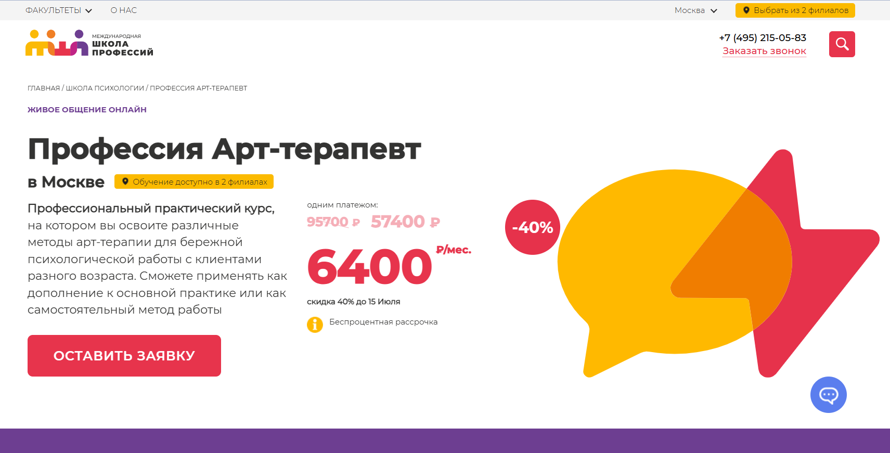
- ✅ Официальный сайт: moscow.videoforme.ru
- 💸 Цена обучения:от 57 400 ₽ индивидуально рассчитывается при оформлении заявки.
- 💳 Рассрочка: от 6 400 ₽ в месяц , беспроцентная, доступна сразу после старта обучения.
- 📚 Формат: дистанционный формат обучения с видеоуроками, теоретическими модулями, практическими заданиями, групповой терапией и доступом к методикам арт-терапии.
- ⏳ Продолжительность: зависит от индивидуального графика и выбранного формата занятий.
- 📜 Документ: по завершении курсов выдается диплом о профессиональной переподготовке.
- 📝 Трудоустройство: курс помогает в практике психолога и расширении профессиональных навыков.
- 🔷 Для кого подходит курс: для практикующих специалистов, начинающих психологов и всех, кто хочет освоить методы арт-терапии для работы с клиентами.
Особенности:
Программа совмещает теорию и практику с фокусом на арт-терапевтические подходы. Занятия проводятся в дистанционном формате, что делает обучение удобным и доступным. Студенты изучают методы арт-терапии, песочную терапию, интермодальную терапию, техники работы в индивидуальном и групповом формате. Поддержка кураторов, доступ к образовательной платформе и гибкий график позволяют совмещать обучение с личной практикой. Курсы включают инструменты для работы с клиентами разных возрастов и направлений, включая семейную терапию и индивидуальные консультации. Программа подходит для повышения квалификации и освоения новой профессии в сфере психологии.
Чему учатся студенты:
- Применять методы арт-терапии в индивидуальном психологическом консультировании
- Проводить групповые и индивидуальные арт-терапевтические занятия
- Использовать технику песочной терапии и терапию искусством
- Работать с клиентами через интермодальные подходы
- Развивать навыки арт-терапевтической методики
- Понимать особенности терапии творчеством и арт-терапевтического процесса
Преподаватели:
- Информация о преподавателях не указана на сайте. Преподают практикующие арт-терапевты и психологи с опытом работы в индивидуальной и групповой терапии.
Преимущества:
- Обучение проходит в удобном дистанционном формате
- Можно совмещать с основной работой благодаря гибкому графику
- Курс подходит для разных уровней подготовки
- Выдается диплом установленного образца
- Обучение проходит на современной образовательной платформе
- Программа включает актуальные методики арт-терапии
- Доступ к теоретическим и практическим материалам после прохождения курса
Отзывы учеников:
Судя по отзывам в интернете, ученики отмечают удобный формат дистанционного обучения, разнообразие практических заданий и возможность сразу применять методы арт-терапии в своей психологической практике. Также выделяют поддержку кураторов и доступность материалов на всей протяженности курса.
Перейти на официальный сайт курса17. Арт-терапевт – Учебный центр дополнительного профессионального образования «ЭКОДПО»
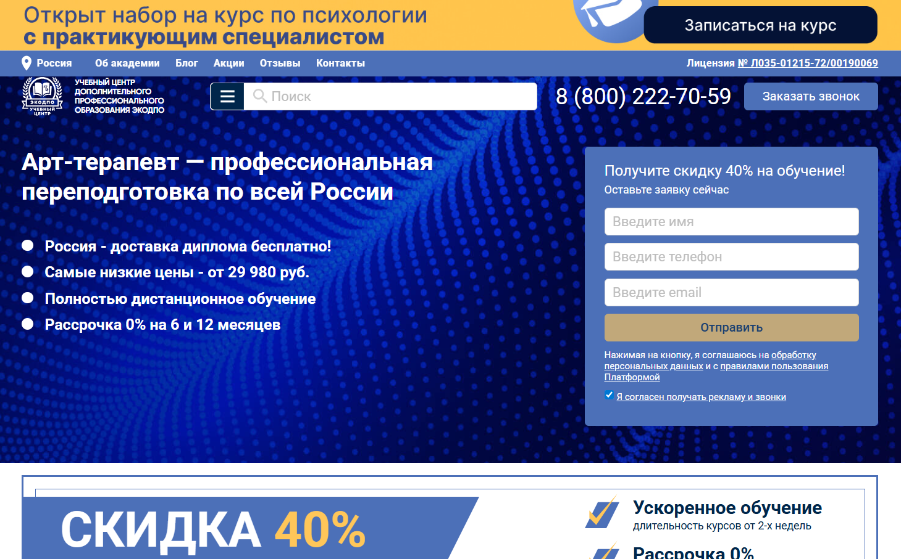
- ✅ Официальный сайт: ecodpo.ru
- 💸 Цена: от 29 980 ₽ (при оплате сразу)
- 💳 Рассрочка:от 2 498 ₽ в месяц до 12 месяцев без процентов от Сбер и Тинькофф Банка
- 📚 Формат: дистанционное обучение с доступом к платформе 24/7, онлайн-занятия, тестирование, методические материалы, вебинары, персональные консультации
- ⏳ Продолжительность: от 252 до 555 академических часов (1,5–3 месяца)
- 📜 Документ: диплом о профессиональной переподготовке установленного образца
- 📝 Трудоустройство: работа в психологических центрах, клиниках, реабилитационных и консультативных учреждениях
- 🔷 Для кого подходит курс: для психологов и специалистов с высшим или средним профессиональным образованием в смежных сферах
Особенности:
Программа разработана по требованиям законодательства РФ и дает возможность получить новую востребованную профессию в дистанционном формате. Обучение проводится на образовательной платформе, где вы самостоятельно выбираете удобный график. Все материалы доступны онлайн, включая лекции, тесты и занятия. Заявки принимаются без вступительных экзаменов. Курсы включают методики арт-терапии, песочную терапию, работу с бессознательным. При необходимости можно адаптировать программу под индивидуальные цели и получить консультации от преподавателей с практическим опытом.
Чему учатся студенты:
- Применять методы арт-терапии в индивидуальной и групповой терапии
- Использовать технику арт-терапии для диагностики и коррекции поведения
- Работать с песочной терапией и другими видами творческого самовыражения
- Проводить личную терапию и сопровождение клиентов с особыми потребностями
- Осваивать интермодальную терапию и арт-синтез
- Использовать визуально-пластические средства и интерпретировать изображения
Преподаватели:
- Программа реализуется при участии практикующих психологов и специалистов в области арт-терапевтических методик. Конкретные имена преподавателей на сайте не указаны.
Преимущества:
- Дистанционное обучение с гибким расписанием
- Скидки до 40% и бесплатная доставка диплома по всей России
- Доступ к учебным материалам круглосуточно
- Без вступительных испытаний и дополнительных сборов
- Индивидуальный подход к учебной программе
- Возможность пересдачи экзаменов неограниченное количество раз
- Быстрая отправка диплома и его регистрация в ФИС ФРДО
Отзывы учеников:
Слушатели положительно оценивают доступность материала, гибкий график и дистанционный формат обучения. Многие отмечают удобную платформу, профессиональную поддержку кураторов, а также практическую пользу полученных знаний. По отзывам, курс помогает освоить востребованную профессию и применять арт-терапевтические подходы в работе с индивидуальными клиентами и группами.
Перейти на официальный сайт курсаБесплатные курсы по обучению на арт-терапевта
Бесплатный онлайн-курс по арт-терапии – Stepik
✅ Официальный сайт: stepik.org
Описание и особенности:
- Формат обучения полностью дистанционный, подходит для самостоятельного прохождения в любом удобном темпе.
- Разбираются основные методы арт-терапии и техники работы с клиентами в индивидуальном и групповом форматах.
- Уделено внимание песочной терапии, музыкальной терапии и интермодальным подходам.
- Можно совмещать обучение с работой или личной терапевтической практикой благодаря гибкому графику.
- Курс помогает освоить профессиональные навыки и методы арт-терапевтической работы с клиентами.
- После прохождения обучения слушатели получают диплом установленного образца.
- В процессе обучения разбираются реальные кейсы, предлагаются практические задания и учебные материалы.
- Обучение проходит на образовательной платформе с поддержкой преподавателей и кураторов.
- Курс ориентирован на тех, кто хочет работать в профессии арт-терапевта или расширить квалификацию психолога.
- Участники получают знания, которые можно применять в практике психолога, семейной терапии и личной терапии.
Бесплатные мероприятия по арт-терапии – Международная Школа Арт-терапии
✅ Официальный сайт: artterapia.ru
Описание и особенности:
- Практические мастер-классы для начинающих и практикующих специалистов доступны в записи без оплаты.
- Формат обучения — дистанционный, удобный для совмещения с личной терапией и психологической практикой.
- Темы занятий охватывают методы арт-терапии в стрессовых состояниях, подходы групповой терапии и работу с эмоциями.
- Занятия ведут сертифицированные арт-терапевты с практическим опытом индивидуального и семейного консультирования.
- Разбираются техники песочной и интермодальной терапии, применяемые в работе с индивидуальными клиентами.
- Курс поможет освоить элементы арт-терапевтической методики для применения в психологической практике.
- Каждое занятие — это пошаговая инструкция по использованию арт-терапевтических методов на практике.
- Участники получают доступ к полезным материалам и могут изучать контент в любом удобном формате.
- Формат мероприятия подходит для тех, кто проходит обучение или планирует профессиональную переподготовку.
Вход для студентов «Ресурсная арт-терапия: искусство восстановления энергии и вдохновения» – Академия арт-терапии
✅ Официальный сайт: artpsy.academy
Описание и особенности:
- Участие бесплатно, доступ к курсу сразу после регистрации в дистанционном формате.
- Программа подходит для психологов, педагогов, коучей, художников и всех, кто интересуется методиками арт-терапии.
- Курс включает арт-практику «Волшебный кувшин» для работы с внутренними ресурсами и эмоциональным состоянием.
- Осваиваются методы арт-терапии, направленные на восстановление энергии, повышение самоценности и вдохновения.
- Используются техники арт-терапии, в том числе песочная терапия и интермодальный подход.
- Все занятия проходят онлайн, в удобном формате обучения без привязки к жёсткому расписанию.
- Практикум помогает применить полученные знания в практике психолога или в работе с индивидуальными клиентами.
- После прохождения курса слушателям выдается электронный сертификат участника.
- Не требует специальной подготовки — подойдёт и для начинающих в сфере психологической практики.
Кто такой арт-терапевт?
Арт-терапевт — это специалист, который использует искусство как инструмент психологической помощи. Он помогает людям выражать эмоции, переживания и внутренние конфликты через творчество: рисование, лепку, музыку, танец и другие формы искусства.
Арт-терапия признана эффективным методом работы с детьми и взрослыми, особенно в ситуациях, когда трудно выразить чувства словами. Арт-терапевты работают в школах, клиниках, реабилитационных центрах, частной практике и социальных службах.
Что делают арт-терапевты и чем занимаются?
Работа арт-терапевта включает широкий спектр задач, направленных на улучшение психологического состояния клиента.
- Проведение индивидуальных и групповых сессий арт-терапии.
- Выбор подходящих творческих методов в зависимости от возраста и состояния клиента.
- Диагностика эмоциональных и психических нарушений через анализ художественных работ.
- Работа с детьми с особыми потребностями, людьми после травм и кризисов.
- Ведение документации, анализ прогресса клиентов.
Арт-терапевт не обучает искусству, а использует его как способ самовыражения и исцеления.
Что должен знать и уметь арт-терапевт?
Профессия требует как гуманитарных, так и творческих навыков. Арт-терапевт должен обладать:
- Глубокими знаниями в области психологии и психотерапии.
- Навыками интерпретации символов, образов и визуального языка.
- Развитыми коммуникативными навыками и эмпатией.
- Пониманием основ различных видов искусства — от изобразительного до музыкального.
- Умением адаптировать методы терапии под индивидуальные особенности клиента.
Также важно постоянно обучаться и повышать квалификацию, так как сфера развивается и требует новых подходов.
Востребованность и зарплаты арт-терапевтов в России
С каждым годом интерес к арт-терапии в России растет. В 2026 году специалисты в этой области становятся все более востребованными.
- Арт-терапевты работают в детских садах, школах, центрах психического здоровья, реабилитационных учреждениях.
- Частная практика также становится популярной, особенно в крупных городах.
Зарплаты зависят от региона, стажа и формата работы:
- Начинающий специалист — от 40 000 до 60 000 рублей в месяц.
- Опытные арт-терапевты в Москве и Санкт-Петербурге — от 80 000 до 120 000 рублей.
- Частные практики с наработанной клиентской базой могут зарабатывать от 150 000 рублей в месяц и выше.
Как стать арт-терапевтом и где учиться?
Чтобы стать арт-терапевтом, необходимо получить базовое образование и пройти специализированную подготовку.
- Базовое образование — желательно психологическое, педагогическое или медицинское.
- Дополнительное образование — курсы и программы по арт-терапии, сертифицированные и признанные профессиональным сообществом.
- Прохождение практики и супервизии — обязательный этап становления специалиста.
Какими качествами должен обладать хороший арт-терапевт?
Личностные качества играют ключевую роль в профессии арт-терапевта. Успешный специалист отличается:
- Терпением и тактичностью.
- Эмоциональной устойчивостью и способностью к самоанализу.
- Креативностью и любовью к искусству.
- Гибкостью мышления и готовностью к постоянному обучению.
- Умением работать с разными категориями людей: от детей до пожилых.
Кому может помочь арт-терапия?
Арт-терапия эффективна при широком спектре психологических и социальных проблем.
- Детям с СДВГ, аутизмом, речевыми и поведенческими трудностями.
- Подросткам, переживающим кризисы самоопределения или проблемы в семье.
- Взрослым с тревожными расстройствами, депрессией, ПТСР.
- Людям, пережившим утрату, насилие, развод, миграцию.
- Пожилым, страдающим от одиночества или возрастных изменений психики.
Методика универсальна и может адаптироваться под любые потребности клиента.
Что такое арт-терапия и как она помогает?
Арт-терапия — это направление психологической помощи, в основе которого лежит творческий процесс. Она помогает клиентам выразить свои чувства и переживания через формы искусства — рисование, лепку, музыку, движение, театральные постановки. Арт-терапия помогает в работе с травмами, тревожностью, стрессом, депрессией и другими эмоциональными состояниями, особенно в рамках индивидуального психологического сопровождения и семейной терапии.
Кому подходит обучение арт-терапии?
Прохождение курса по арт-терапии подойдет как действующим психологам, так и начинающим специалистам, стремящимся получить профессию арт-терапевта. Также это обучение будет полезно педагогам, социальным работникам и тем, кто интересуется терапией творчеством и психологической практикой.
Как проходит обучение в дистанционном формате?
Дистанционное обучение арт-терапии проходит на образовательной платформе, где вы получаете доступ к учебным материалам, вебинарам, видеолекциям, а также участвуете в практических занятиях. Такой удобный формат позволяет совмещать учебу с работой и личной жизнью.
Какие методы арт-терапии изучают на курсах?
В рамках программы вы изучаете методы арт-терапии, такие как песочная терапия, музыкальная терапия, интермодальная терапия, арт-терапевтическую технику коллажа, рисования, работы с метафорическими картами и другими средствами терапии искусством.
Какие темы охватывает обучение?
Курсы охватывают направления арт-терапии, основы арт-терапии, арт-терапевтические методы, подходы арт-терапии, арт-терапевтические методики, арт-терапевтический процесс, работу с индивидуальными клиентами и в рамках групповой терапии.
Что входит в программу профессиональной переподготовки по арт-терапии?
Программы профессиональной переподготовки включают теоретические блоки, практические задания, практические навыки ведения арт-терапевтического занятия, семейной терапии и супервизии. По завершении вы получаете диплом установленного образца.
Какие преимущества имеет дистанционное обучение арт-терапии?
Дистанционные образовательные программы позволяют обучаться в любом удобном формате, иметь индивидуальный график, получать доступ к материалам в любое время, а также совмещать учебу с личной практикой и работой.
Какие документы выдаются после окончания обучения?
После завершения обучения и успешного прохождения курса вы получаете диплом или удостоверение о профессиональной переподготовке, которое подтверждает вашу квалификацию арт-терапевта.
Можно ли совмещать обучение с работой?
Да, дистанционная форма обучения позволяет гибко планировать занятия, благодаря чему вы сможете совмещать обучение с рабочей деятельностью, имея индивидуальный график обучения.
Какой формат занятий применяется в обучении арт-терапии?
Обучение проходит в формате онлайн-занятий, включает в себя как групповые занятия по групповой терапии, так и индивидуальные консультации. Программа ориентирована на практическое применение знаний.
Что включает в себя практическая часть курса?
Практические занятия направлены на освоение техник арт-терапии, ведение арт-терапевтических сессий, выполнение практического задания и анализ кейсов из практики психолога.
Какие технологии используются при дистанционном обучении?
В обучении используются современные дистанционные технологии, доступная образовательная платформа, поддержка кураторов, онлайн-чат, видеоконференции и форум для общения с преподавателями и слушателями курса.
Можно ли получить новую профессию после прохождения курсов по арт-терапии?
Да, после прохождения обучения вы освоите профессию арт-терапевта и сможете начать работать арт-терапевтом в образовательных учреждениях, центрах психологической помощи, частной практике.
Как арт-терапия применяется в практике психолога?
Арт-терапия активно применяется в индивидуальном психологическом консультировании, семейной терапии, работе с детьми и взрослыми. Арт-терапевтические методы помогают клиентам безопасно выражать эмоции, находить ресурсы и восстанавливаться после психотравм.
Какие преимущества дает прохождение курса арт-терапии?
Прохождение курса позволяет освоить навыки ведения сессий, повысить уровень квалификации, освоить новые методики арт-терапии, расширить спектр услуг в личной практике и получить качественное профессиональное образование.
Можно ли применять полученные знания сразу после курса?
Да, обучение ориентировано на практическое применение. Вы освоите методы арт-терапии, научитесь проводить арт-терапевтические занятия и использовать их в работе с индивидуальными клиентами и группами уже в ходе или сразу после завершения программы.
Какие формы искусства используются в арт-терапии?
В арт-терапевтическом процессе применяются песочная терапия, рисование, лепка, музыка, движение, коллаж, театр. Это позволяет подобрать удобный формат и индивидуальный подход для каждого клиента.
Как выбрать подходящий курс арт-терапии?
При выборе курса важно учитывать формат обучения, наличие дистанционного формата, практических заданий, поддержку кураторов, уровень преподавателей и возможность получения диплома.
Что нужно для начала обучения?
Для начала достаточно оставить заявку, выбрать удобную систему оплаты (возможно оплатить обучение в рассрочку) и получить доступ к образовательной платформе. Обучение можно начать в любом удобном темпе сразу после регистрации.
------------------------------------------------
Реклама. Информация о рекламодателе по ссылкам в статье.